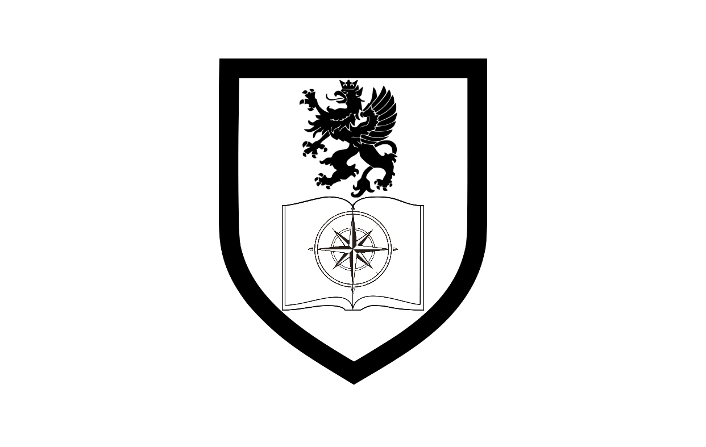

Çüngoland Military Police(ÇMP) 1963 yılında Amerika Birleşik Devletleri tarafından Çüngoland'de kurulan paramiliter kuvvettir. İlk zamanlarda aynı bir polis gibi çalışan ÇMP, çıkan Komünist ayaklanmalarını bastırmaktaydı. 1970 yılında ÇMP, Çüngoland Anti-Kapitalist Ayaklanması'nda ordunun ve Faruk Çebi’nin yanında yakın ateş desteğini sağladı ve ayaklanma bastırıldı. 1971 İkinci Çüngoland İç Savaşında gücü azaldı ve casus/gizli polis karışımına dönüştürüldü. 1978 Başbakan Suikasti bizzat ÇMP tarafından yapılmıştır. 1979 yılında Çüngoland Investigation Bureau(ÇIB)’nun alt kolu haline gelmiştir. Federal Çüngoland kurulduktan sonra Komünist liderlerin öldürülmesinde rolü büyüktür. Genellikle araç olarak beyaz Jeep Cherokee kullanılır. Ahmet Tanaçar, Ahmet Kıraç gibi sol isimler ÇMP tarafından öldürülmüştür. Günümüzde aktif olarak faaliyet göstermese de kuvvet dağıtılmamıştır. Devlet birliğin varlığını asla kabul etmemiştir. ÇMP kamuoyuna servis edilmemesi gereken bir unsurdur. Bu belge ÇIB için yazılmıştır. Gizli kalmalıdır.
Çüngoland Investigation Bureau
Kurucusu
Friedrich Müller
Kurulma Tarihi
04.08.1948
Şuanki Başkanı
Karl Szafnauer
Command Specialist ÇIB Ajanı Clark Zimmer
1986 yılından itibaren başa geçen sol görüşlü partiler ülkede iç güvenlik sorunlarına sebep olmuştur. Bunların başında Sol Çizgi Partisi ve kurucusu Ahmet Tanaçar gelmiştir. Ülkedeki askeri disipline zarar verilmiş, halk yozlaşmıştır. Bu durum ÇIB tarafından fark edilmiştir. 1990 yılında seçimleri kazanarak halkı ayaklandıran parti, kamuoyu tarafından da desteklenmiştir. Ancak bu durum Çüngoland Ordusu ve ÇIB tarafını rahatsız etmiştir. Ahmet Tanaçar isimli şahıs ordu envanterinden malzeme çalarak hususi paramiliter kuvvetlerini oluşturmuştur. Bu durum fark edilmiş ve şahıs, ÇIB tarafından Kardeşler Mahallesindeki yerel karakolda nezarethaneye alınmıştır. 23 Mayıs 1991 tarihinde, şahsı almak için havalanan CL-HW1 tescilli sivil görünümlü Bell-206 JetRanger helikopteri Çüngoburg’daki ÇIB binasından kalktıktan 7 dakika sonra orduya ait olduğu anlaşılan bir Raytheon Stinger füzesi ile vurulmuştur. Helikopter A-11 otobanının kenarına düşmüştür ve içindeki Pilot Arnold Ratzenberger, ÇIB Ajanı Tomasz Krupp, ÇIB Başkanı Christopher Kleinfeld ve sekreteri Julia Florenz ölmüştür. Olayı, Sol Çizgi Partisi’nin paramiliter grubu olan SolYumruk üstlenmiştir. ÇIB çok geçmeden ÇMP ile anlaşmış ve paramiliter bir oluşum kurmuştur. ÇMP’ye devlet tarafından gereken teçhizat sağlanmış ve SolYumruk örgüt evleri ÇMP tarafından basılmıştır. Ahmet Tanaçar 27 Aralık 1991 tarihinde ÇMP tarafından öldürülmüştür ve bu olay basına “Terör Olayı” olarak lanse edilmiştir. Kaybolan Stinger füzesi ile ilgili bir bilgi halen yoktur. Sol partiler 1991 yılının sonunda tamamen kapatılmıştır. Diğer bir solcu siyasetçi olan Ahmet Kıraç 1992 Şubatında öldürülmüştür. Bu rapor ÇIB özel raporudur. Gizli kalmalıdır.
ÇIB Araştırma Komisyonu Üyesi Klaus Feldjager